Alice Silva Pereira
Desenvolvedora Web & Estudante Full-Stack
Desenvolvedora Web & Estudante Full-Stack
O que estou aprendendo e utilizo para construir meus projetos
Semântica e Estrutura
Flexbox, Grid & Keyframes
DOM, Async/Await e APIs
Versionamento de Código
Automação de CI & Testes
Ambiente Back-end e APIs
Olá! Meu nome é Alice Silva Pereira. Sou estudante de desenvolvimento de software focada no ecossistema JavaScript. Construo interfaces modernas e dinâmicas no Front-End, além de explorar a criação de APIs, aplicações CLI via linha de comando em Node.js e esteiras de testes automatizados.
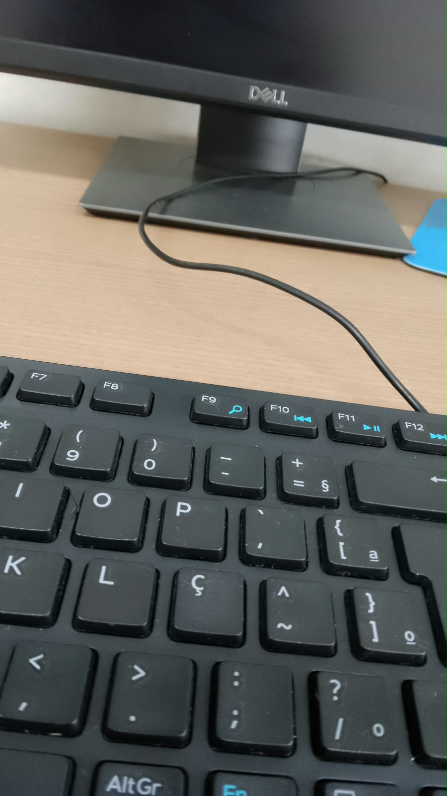
Minha trajetória começou com a construção de sites focados em HTML semântico, CSS e manipulação de DOM. Conforme avancei nos estudos, passei a conectar minhas aplicações a APIs externas (como a iTunes Search API e OpenWeatherMap) e a integrar modelos de Inteligência Artificial via Groq API.
Hoje, estou expandindo meus conhecimentos em Back-End com Node.js, aplicando Orientação a Objetos e estruturando pipelines de CI/CD via GitHub Actions para garantir a qualidade, versionamento e execução automatizada dos meus testes de código.
Meus projetos e aplicações em cena!
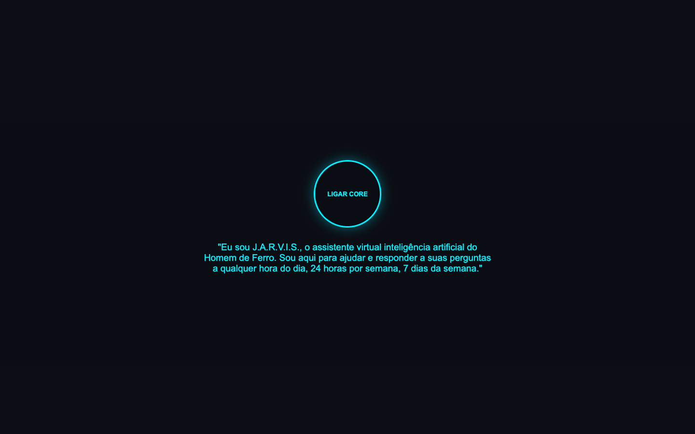
Assistente virtual interativo inspirado no J.A.R.V.I.S. Integrado ao servidor Node.js/Express com o modelo Llama 3.2 via OpenRouter API. Utiliza Web Speech API para reconhecimento e síntese de voz (TTS) em tempo real, injeção dinâmica de data/hora e interface futurista.
Full-Stack / Node.js Local | Ver no GitHub
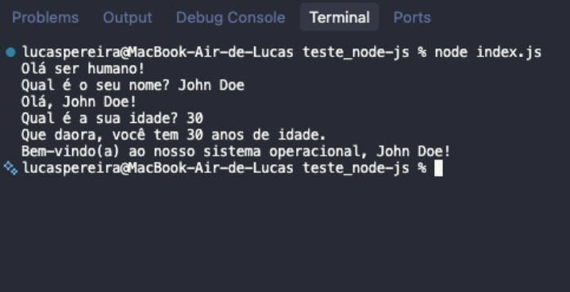
Aplicação interativa via linha de comando (CLI) em Node.js aplicando Orientação a Objetos. Possui modularização de classes, validação de entradas e pipeline de Integração Contínua (CI) automatizado via GitHub Actions para validação de builds e testes.
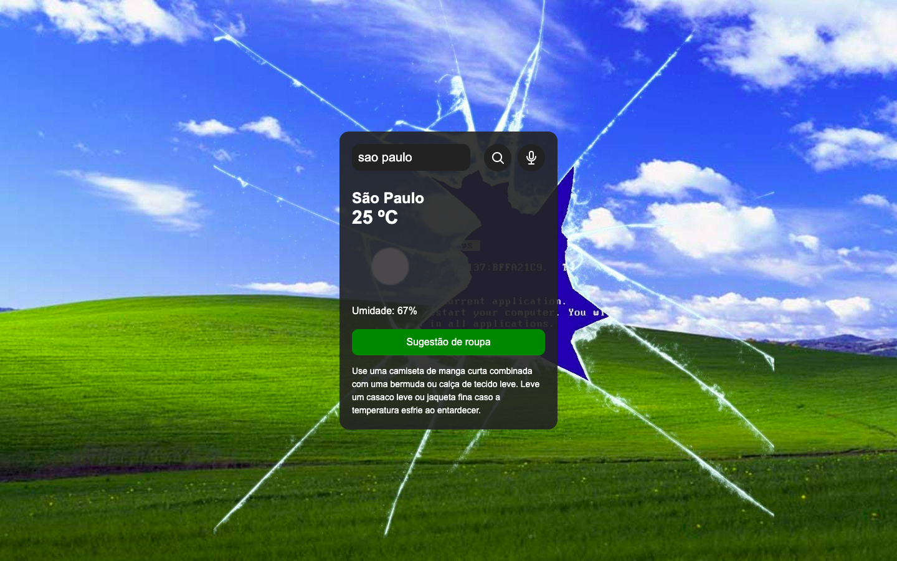
Consulta condições climáticas em tempo real e consome a API de Inteligência Artificial da Groq para gerar sugestões personalizadas de vestuário. Praticou-se consumo assíncrono de múltiplas APIs (OpenWeatherMap e Groq) e manipulação dinâmica de DOM.
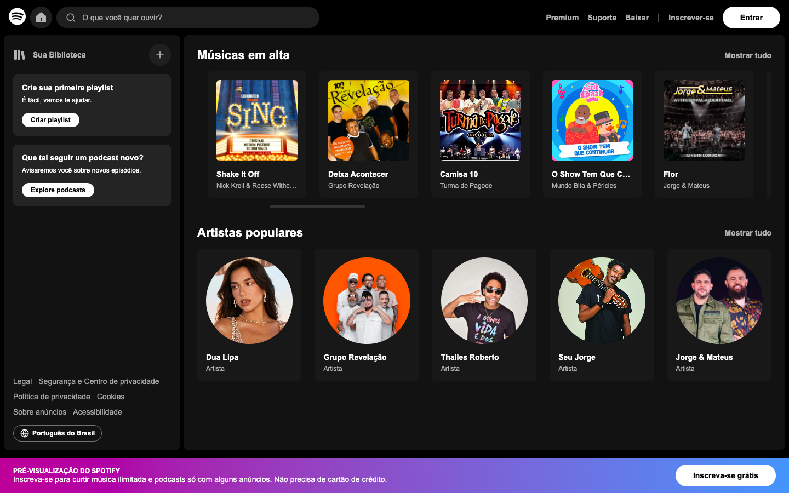
Interface responsiva inspirada no Spotify. Consome a iTunes Search API via Fetch/Async-Await para busca de faixas em tempo real, renderização de álbuns e tocador interativo com prévia de áudio instantânea.
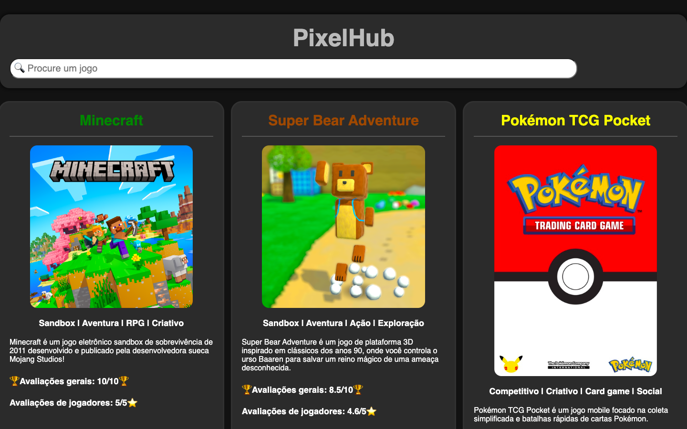
Catálogo web de jogos com renderização dinâmica de cards a partir de arrays de objetos em JavaScript. Inclui sinopses, avaliações e visual estilizado de acordo com a identidade visual dos jogos.
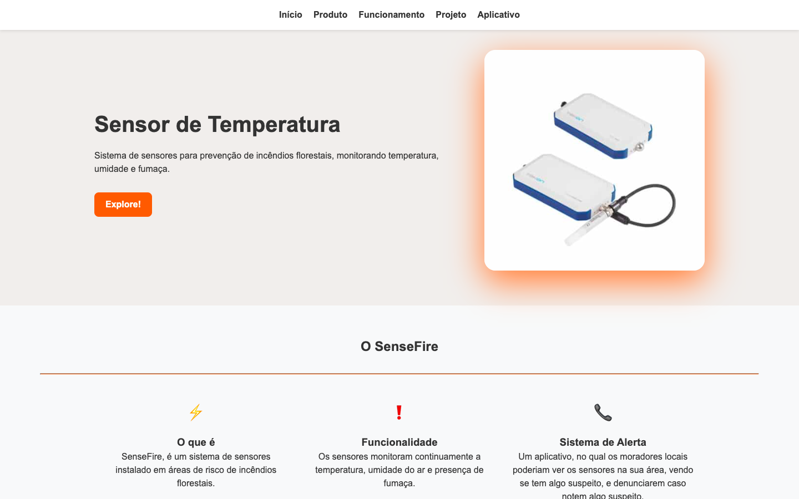
Aplicação institucional para apresentação de sistema IoT focado na prevenção de incêndios florestais. Layout adaptativo construído com CSS Grid, Flexbox e interatividade com JavaScript.
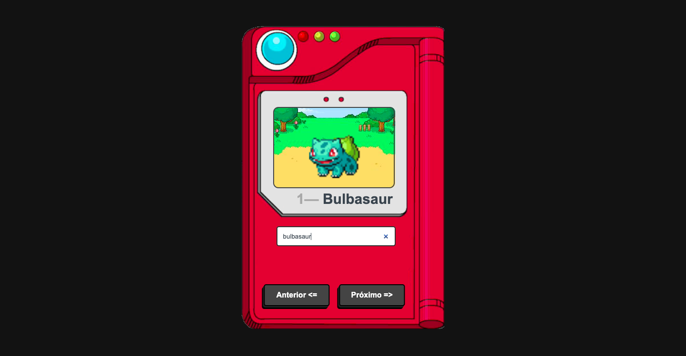
Aplicação interativa para busca de Pokémons por nome/ID e navegação por botões. Explora consumo de API REST via `fetch`, manipulação do DOM e tratamento de erros de consulta.
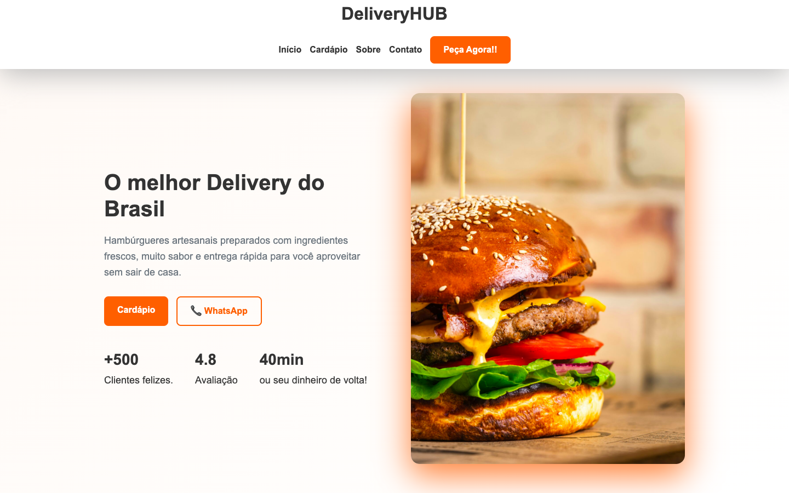
Simulação de e-commerce de hamburgueria delivery com navegação interativa pelo cardápio e checkout rápido com integração para envio de pedidos via WhatsApp.
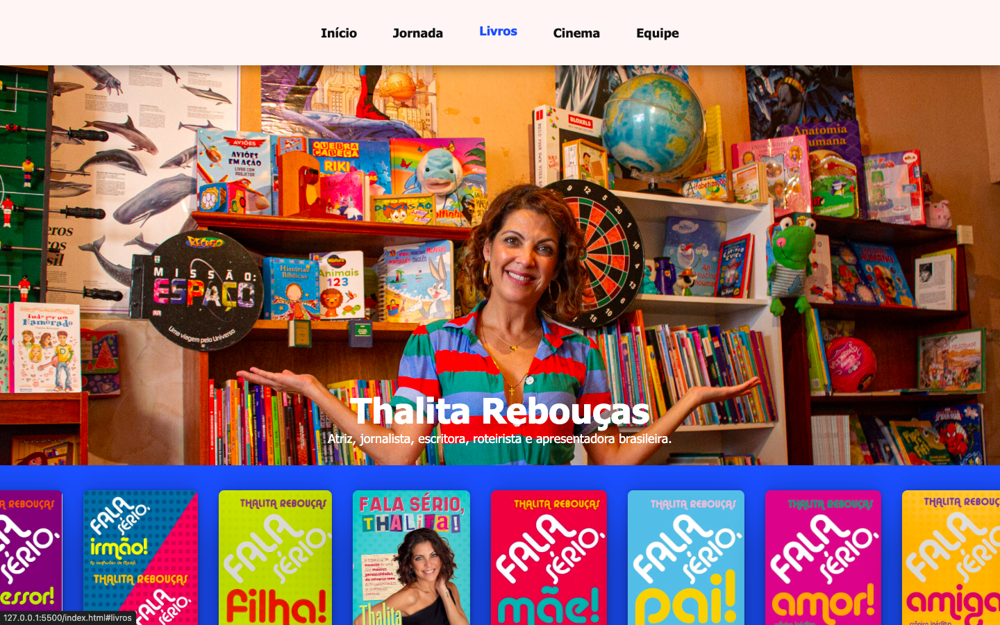
Blog literário desenvolvido para homenagear a escritora Thalita Rebouças. Foco em HTML5 semântico, layouts adaptativos com CSS Grid/Flexbox e carrosséis com animações CSS puras (@keyframes).
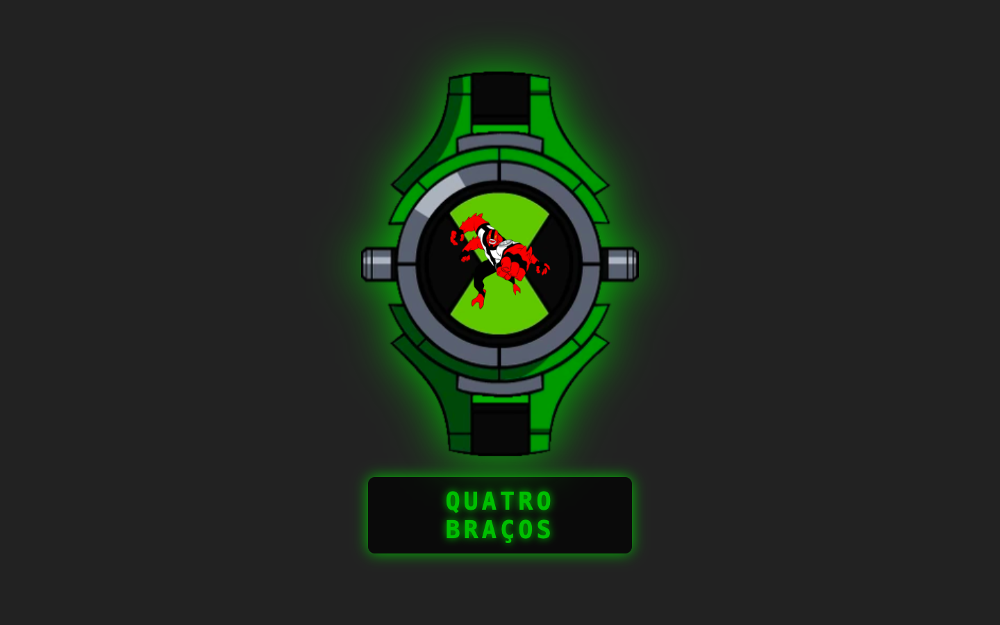
Aplicação interativa inspirada no relógio do Ben 10. Desenvolvida em JavaScript Vanilla, utiliza manipulação do DOM e animações CSS para criar efeitos holográficos e alternar dinamicamente a projeção dos alienígenas a cada clique.
Entre em contato via WhatsApp.